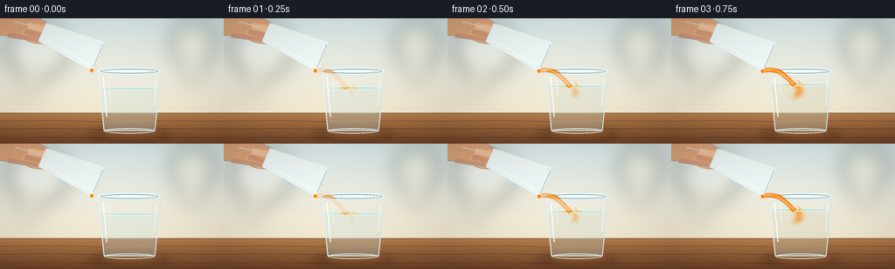
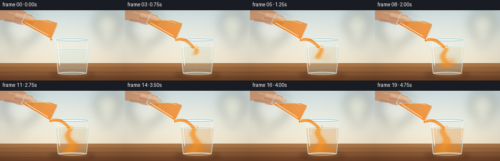
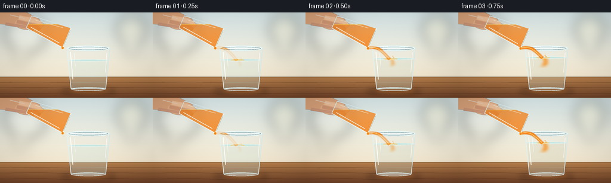
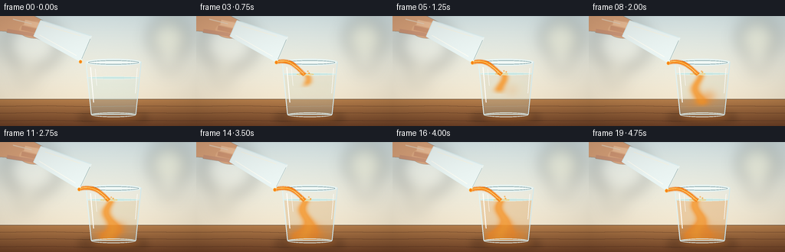

CODING AGENTS AS PIXEL WORLD MODELS
traex/GPT-5.6-Sol · material_0020
点击播放 · 原生 RGB 像素
逐轮保存的候选
回放视频、检查图与代码变化。
每份候选均可单独播放。实际图片检查记录在下方工具轨迹中。
候选 01播放与检查图
点击播放 · 原生 RGB 像素


展开代码变化
--- 上一保存版本
+++ 本次保存版本
@@ -0,0 +1,244 @@
+from pathlib import Path
+import math
+import numpy as np
+from PIL import Image, ImageDraw, ImageFilter
+import artifact_io
+
+W,H,N = 256,144,20
+S=4
+WS,HS=W*S,H*S
+
+def sc(v): return int(round(v*S))
+def pts(seq): return [(sc(x),sc(y)) for x,y in seq]
+def smooth(x):
+ x=max(0.0,min(1.0,x)); return x*x*(3-2*x)
+
+def ellipse(draw, box, **kw): draw.ellipse(tuple(sc(v) for v in box), **kw)
+def line(draw, xy, **kw): draw.line(pts(xy), **kw)
+
+def make_background():
+ a=np.zeros((HS,WS,3),dtype=np.uint8)
+ for y in range(HS):
+ yy=y/S
+ if yy < 109:
+ q=yy/109
+ c=np.array([220,235,237])*(1-q)+np.array([248,235,211])*q
+ else:
+ q=(yy-109)/35
+ c=np.array([184,128,76])*(1-q)+np.array([112,66,39])*q
+ a[y,:,]=np.clip(c,0,255)
+ im=Image.fromarray(a,'RGB').convert('RGBA')
+ # Soft kitchen-window/bokeh atmosphere.
+ glow=Image.new('RGBA',(WS,HS),(0,0,0,0)); d=ImageDraw.Draw(glow)
+ ellipse(d,(8,4,78,68),fill=(255,255,244,90))
+ ellipse(d,(195,3,246,54),fill=(255,248,210,80))
+ ellipse(d,(208,48,233,73),fill=(255,255,237,48))
+ ellipse(d,(22,68,45,91),fill=(255,246,213,42))
+ glow=glow.filter(ImageFilter.GaussianBlur(sc(10)))
+ im=Image.alpha_composite(im,glow)
+ d=ImageDraw.Draw(im)
+ # Back-splash seam and tabletop grain.
+ line(d,[(0,108.7),(256,108.7)],fill=(119,91,67,80),width=sc(.7))
+ for k,(yy,alpha) in enumerate([(118,32),(127,23),(137,18)]):
+ line(d,[(0,yy),(62,yy-.7),(119,yy+.5),(178,yy-.5),(256,yy)],fill=(67,37,24,alpha),width=sc(.45))
+ return im
+
+BG=make_background()
+
+# Full-resolution coordinate fields for realistic liquid compositing.
+yy,xx=np.mgrid[0:HS,0:WS].astype(np.float32)
+X=xx/S; Y=yy/S
+
+def render_receiver(im, f):
+ t=f/(N-1); pour=smooth((t-.015)/.18)
+ # Geometry of receiving glass.
+ top_y=59.0; bot_y=130.0; cx=148.0
+ # Soft shadows and transmitted orange light.
+ sh=Image.new('RGBA',(WS,HS),(0,0,0,0)); sd=ImageDraw.Draw(sh)
+ ellipse(sd,(101,126,194,140),fill=(56,29,17,74))
+ ellipse(sd,(119,126,183,136),fill=(240,135,34,int(25+35*pour)))
+ sh=sh.filter(ImageFilter.GaussianBlur(sc(4.2)))
+ im.alpha_composite(sh)
+
+ # Glass body, very lightly whitening background.
+ bodymask=Image.new('L',(WS,HS),0); md=ImageDraw.Draw(bodymask)
+ md.polygon(pts([(112,60),(184,60),(176.8,130),(119.2,130)]),fill=255)
+ wash=Image.new('RGBA',(WS,HS),(236,249,250,23)); wash.putalpha(bodymask.point(lambda z:z*23//255))
+ im.alpha_composite(wash)
+
+ # Water rises gently as juice enters.
+ water_y=80.5-5.2*pour
+ left=112+(water_y-60)*.052; right=184-(water_y-60)*.052
+ glass_left=112+(Y-60)*.1028
+ glass_right=184-(Y-60)*.1028
+ inside=(Y>=water_y)&(Y<=128.8)&(X>=glass_left+1)&(X<=glass_right-1)
+
+ # Base water remains transparent blue-gray; the orange plume curls and disperses.
+ arr=np.zeros((HS,WS,4),dtype=np.uint8)
+ base_alpha=np.where(inside,48+12*(Y-water_y)/(130-water_y),0)
+ arr[...,0]=182; arr[...,1]=224; arr[...,2]=225; arr[...,3]=np.clip(base_alpha,0,70).astype(np.uint8)
+ im.alpha_composite(Image.fromarray(arr,'RGBA'))
+
+ if pour>0.01:
+ # Descending central ribbon, with a hooked and branching lower plume.
+ reach=water_y+8+47*smooth((t-.04)/.64)
+ center=142.0 + 4.0*np.sin((Y-water_y)*.16+f*.19) + .035*(Y-water_y)
+ width=2.1 + .095*np.maximum(0,Y-water_y) + 2.2*pour
+ stem=np.exp(-((X-center)/width)**2) * np.clip((reach-Y+6)/7,0,1) * (Y>=water_y-1)
+ # Soft turbulent side curls.
+ cy1=88+28*smooth(t/.72); cx1=151+5*math.sin(f*.23)
+ curl1=np.exp(-(((X-cx1)/10.5)**2+((Y-cy1)/9.0)**2))*smooth((t-.12)/.42)
+ cy2=101+22*smooth(t/.72); cx2=137+4*math.cos(f*.27)
+ curl2=np.exp(-(((X-cx2)/12.5)**2+((Y-cy2)/7.0)**2))*smooth((t-.22)/.45)
+ # Cloud accumulating and spreading near the bottom.
+ bottom=np.exp(-((Y-123)/10.5)**2)*np.exp(-((X-149)/29)**4)*smooth((t-.34)/.55)
+ # Overall pale mixing, strongest late in the shot.
+ general=(0.10+0.28*smooth((t-.35)/.65))*inside
+ dens=np.clip((.92*stem+.56*curl1+.46*curl2+.52*bottom+general)*inside*pour,0,1)
+ orange=np.zeros((HS,WS,4),dtype=np.uint8)
+ # Golden juice with brighter suspended center.
+ orange[...,0]=247; orange[...,1]=133; orange[...,2]=27
+ orange[...,3]=(dens*190).astype(np.uint8)
+ im.alpha_composite(Image.fromarray(orange,'RGBA'))
+ # Bright yellow inner tendril gives translucent depth.
+ hi=np.clip(stem*.55*inside*pour,0,1)
+ hia=np.zeros((HS,WS,4),dtype=np.uint8); hia[...,:3]=[255,184,52]; hia[...,3]=(hi*105).astype(np.uint8)
+ im.alpha_composite(Image.fromarray(hia,'RGBA'))
+
+ d=ImageDraw.Draw(im)
+ # Water surface, partially interrupted at impact.
+ ellipse(d,(left,water_y-1.6,right,water_y+2.0),fill=(202,232,228,29),outline=(239,251,245,120),width=sc(.55))
+ if pour>.05:
+ # concentric impact ripples
+ rw=10+2*math.sin(f*.8)
+ ellipse(d,(142-rw,water_y-.9,142+rw,water_y+1.7),outline=(255,202,98,115),width=sc(.65))
+
+ # Rear rim, sides and thick rounded base of transparent receiver.
+ ellipse(d,(111.5,55.8,184.5,65.0),fill=(242,250,247,20),outline=(229,244,244,165),width=sc(1.15))
+ ellipse(d,(115,58.0,181,63.2),outline=(117,155,161,80),width=sc(.7))
+ line(d,[(112,60),(119.1,128.8)],fill=(225,243,244,185),width=sc(1.25))
+ line(d,[(184,60),(176.9,128.8)],fill=(215,236,238,190),width=sc(1.25))
+ line(d,[(119.1,128.8),(176.9,128.8)],fill=(220,237,236,180),width=sc(1.2))
+ ellipse(d,(119,126.2,177,132.2),outline=(229,242,240,155),width=sc(1.0))
+ # Brilliant vertical refractions.
+ line(d,[(118.0,67),(122.0,113)],fill=(255,255,251,125),width=sc(1.15))
+ line(d,[(179,68),(176.4,101)],fill=(255,255,252,68),width=sc(.8))
+ line(d,[(124,69),(126,91)],fill=(255,255,255,44),width=sc(.55))
+ return water_y
+
+def source_geometry(f):
+ t=f/(N-1)
+ ang=math.radians(23.0+4.0*smooth(t)+.35*math.sin(f*.38))
+ a=np.array([math.cos(ang),math.sin(ang)])
+ p=np.array([-math.sin(ang),math.cos(ang)])
+ base=np.array([48.5,15.8]) + np.array([0,.35*math.sin(f*.30)])
+ mouth=base+a*69
+ b1=base+p*11.2; b2=base-p*11.2
+ m1=mouth+p*18.1; m2=mouth-p*18.1
+ return base,mouth,a,p,b1,b2,m1,m2
+
+def render_hand(im,f, geom):
+ base,mouth,a,p,b1,b2,m1,m2=geom
+ hand=Image.new('RGBA',(WS,HS),(0,0,0,0)); d=ImageDraw.Draw(hand)
+ # Hand entering from upper-left and gently gripping the tumbler base.
+ d.polygon(pts([(-8,-5),(37,-4),(66,11),(65,25),(46,29),(22,21),(-8,19)]),fill=(221,165,124,255))
+ ellipse(d,(25,7,67,29),fill=(229,176,135,255))
+ # fingers visible through / around the clear glass
+ line(d,[(32,8),(63,15),(72,23)],fill=(241,192,151,245),width=sc(7))
+ line(d,[(28,15),(58,22),(67,29)],fill=(211,147,109,235),width=sc(6))
+ line(d,[(9,19),(41,24),(56,30)],fill=(205,137,101,210),width=sc(5))
+ line(d,[(17,4),(41,10)],fill=(250,203,163,130),width=sc(1.2))
+ hand=hand.filter(ImageFilter.GaussianBlur(sc(.35)))
+ im.alpha_composite(hand)
+
+def render_stream(im,f,geom,water_y):
+ t=f/(N-1); amount=smooth((t-.01)/.17)
+ if amount<=.01:return
+ base,mouth,a,p,b1,b2,m1,m2=geom
+ # lower lip is endpoint with larger y
+ lip=m1 if m1[1]>m2[1] else m2
+ start=np.array([lip[0]-.5,lip[1]-.2])
+ end=np.array([141.8,water_y+.1])
+ samples=[]
+ for i in range(25):
+ q=i/24
+ # a gravity-bent, gently wavering pour
+ x=(1-q)*start[0]+q*end[0] + math.sin(f*.42+q*4.4)*(.45+q*.35)
+ y=(1-q)*start[1]+q*end[1] - 7.0*math.sin(math.pi*q) + 1.0*q*q
+ samples.append((x,y))
+ st=Image.new('RGBA',(WS,HS),(0,0,0,0)); d=ImageDraw.Draw(st)
+ # subtle glow, main orange stream, and specular filament
+ line(d,samples,fill=(229,111,18,int(90*amount)),width=sc(6.2))
+ line(d,samples,fill=(248,132,22,int(240*amount)),width=sc(4.2))
+ line(d,[(x-.75,y-.4) for x,y in samples],fill=(255,204,91,int(190*amount)),width=sc(1.05))
+ # tiny splash droplets at impact
+ phase=f*.9
+ for k in range(3):
+ dx=(-1 if k==0 else 1)*(3+k*2)+math.sin(phase+k)
+ dy= -2.5-(k%2)*2 + abs(math.sin(phase+k))*1.5
+ ellipse(d,(141+dx-1,water_y+dy-1,141+dx+1,water_y+dy+1),fill=(251,156,42,int(150*amount)))
+ im.alpha_composite(st)
+
+def render_source(im,f,geom):
+ t=f/(N-1); base,mouth,a,p,b1,b2,m1,m2=geom
+ poly=[tuple(b1),tuple(m1),tuple(m2),tuple(b2)]
+ mask=Image.new('L',(WS,HS),0); md=ImageDraw.Draw(mask); md.polygon(pts(poly),fill=255)
+ # Orange juice is gravity-level inside tilted source glass and gradually reduces.
+ fluidline=20.0+6.0*smooth(t)
+ lower=(Y>=fluidline)
+ marr=np.array(mask,dtype=np.float32)/255
+ dens=marr*lower
+ liq=np.zeros((HS,WS,4),dtype=np.uint8)
+ # rich translucent orange, slight depth gradient
+ liq[...,0]=247; liq[...,1]=126; liq[...,2]=17
+ liq[...,3]=(dens*(190+30*np.clip((Y-fluidline)/38,0,1))).astype(np.uint8)
+ im.alpha_composite(Image.fromarray(liq,'RGBA'))
+ d=ImageDraw.Draw(im)
+ # horizontal fluid meniscus clipped conceptually to vessel bounds
+ # find polygon intersections with the fluid line, approximated broad enough but clipped via layer
+ surf=Image.new('RGBA',(WS,HS),(0,0,0,0)); sd=ImageDraw.Draw(surf)
+ line(sd,[(35,fluidline),(130,fluidline)],fill=(255,198,69,170),width=sc(1.0))
+ surf.putalpha(Image.composite(surf.getchannel('A'),Image.new('L',(WS,HS),0),mask))
+ im.alpha_composite(surf)
+ d=ImageDraw.Draw(im)
+ # translucent glass wash and contours
+ d.polygon(pts(poly),fill=(238,248,246,15))
+ line(d,[tuple(b1),tuple(m1)],fill=(235,248,247,190),width=sc(1.2))
+ line(d,[tuple(b2),tuple(m2)],fill=(220,239,241,175),width=sc(1.15))
+ line(d,[tuple(b1),tuple(b2)],fill=(223,240,241,170),width=sc(1.1))
+ # mouth ellipselike rim represented by layered edge between mouth corners
+ line(d,[tuple(m1),tuple(m2)],fill=(239,249,246,220),width=sc(1.7))
+ q1=mouth-p*14; q2=mouth+p*14
+ line(d,[tuple(q1),tuple(q2)],fill=(128,155,153,90),width=sc(.55))
+ # long glass highlights
+ h1=base+p*7+a*6; h2=mouth+p*13-a*8
+ line(d,[tuple(h1),tuple(h2)],fill=(255,255,246,165),width=sc(1.1))
+ h3=base-p*7+a*8; h4=mouth-p*13-a*13
+ line(d,[tuple(h3),tuple(h4)],fill=(255,246,222,70),width=sc(.65))
+ # bright orange bead collecting on pouring lip
+ lip=m1 if m1[1]>m2[1] else m2
+ ellipse(d,(lip[0]-2.2,lip[1]-2.0,lip[0]+2.0,lip[1]+2.7),fill=(248,131,25,210),outline=(255,202,87,150),width=sc(.45))
+
+
+def frame(f):
+ im=BG.copy()
+ geom=source_geometry(f)
+ render_hand(im,f,geom)
+ water_y=render_receiver(im,f)
+ # Stream appears behind the lip but in front of receiving glass rim.
+ render_stream(im,f,geom,water_y)
+ render_source(im,f,geom)
+ # Cinematic vignette and subtle grain.
+ arr=np.array(im.convert('RGB')).astype(np.float32)
+ ys,xs=np.mgrid[0:HS,0:WS]
+ dx=(xs-WS/2)/(WS/2); dy=(ys-HS/2)/(HS/2)
+ vig=np.clip(1-.075*(dx*dx+dy*dy),.86,1)[...,None]
+ arr*=vig
+ rng=np.random.default_rng(1907+f)
+ arr+=rng.normal(0,.65,arr.shape[:2])[...,None]
+ out=Image.fromarray(np.clip(arr,0,255).astype(np.uint8),'RGB').resize((W,H),Image.Resampling.LANCZOS)
+ return np.array(out,dtype=np.uint8)
+
+frames=np.stack([frame(i) for i in range(N)])
+artifact_io.save(frames,Path(__file__).resolve().parent)
+print('saved',frames.shape,frames.dtype)
候选 02播放与检查图
点击播放 · 原生 RGB 像素


展开代码变化
--- 上一保存版本
+++ 本次保存版本
@@ -201,8 +201,12 @@
surf.putalpha(Image.composite(surf.getchannel('A'),Image.new('L',(WS,HS),0),mask))
im.alpha_composite(surf)
d=ImageDraw.Draw(im)
- # translucent glass wash and contours
- d.polygon(pts(poly),fill=(238,248,246,15))
+ # Translucent glass wash and contours. Composite the wash rather than
+ # drawing low-alpha pixels directly (which would replace the liquid).
+ glasswash=Image.new('RGBA',(WS,HS),(238,248,246,15))
+ glasswash.putalpha(mask.point(lambda z:z*15//255))
+ im.alpha_composite(glasswash)
+ d=ImageDraw.Draw(im)
line(d,[tuple(b1),tuple(m1)],fill=(235,248,247,190),width=sc(1.2))
line(d,[tuple(b2),tuple(m2)],fill=(220,239,241,175),width=sc(1.15))
line(d,[tuple(b1),tuple(b2)],fill=(223,240,241,170),width=sc(1.1))
可观测工具轨迹
实际执行的命令与返回图片。
命令 1exit 0
/bin/bash -lc "cat prompt.txt && printf '\\n---RULES---\\n' && cat GENERATION_RULES.md && printf '\\n---SPEC---\\n' && cat task_spec.json"
命令 2exit 0
/bin/bash -lc "find . -maxdepth 2 -type f -printf '%p %s bytes\\n' | sort"
命令 3exit 0
/bin/bash -lc "which ffmpeg; which convert; which python3; python3 - <<'PY'
try:
import PIL; print('PIL',PIL.__version__)
except Exception as e: print('no PIL',e)
try:
import cv2; print('cv2',cv2.__version__)
except Exception as e: print('no cv2',e)
PY"命令 4exit 0
/bin/bash -lc "sed -n '1,260p' artifact_io.py"
命令 5exit 0
/bin/bash -lc "cat > generate.py <<'PY'
from pathlib import Path
import math
import numpy as np
from PIL import Image, ImageDraw, ImageFilter
import artifact_io
W,H,N = 256,144,20
S=4
WS,HS=W*S,H*S
def sc(v): return int(round(v*S))
def pts(seq): return [(sc(x),sc(y)) for x,y in seq]
def smooth(x):
x=max(0.0,min(1.0,x)); return x*x*(3-2*x)
def ellipse(draw, box, **kw): draw.ellipse(tuple(sc(v) for v in box), **kw)
def line(draw, xy, **kw): draw.line(pts(xy), **kw)
def make_background():
a=np.zeros((HS,WS,3),dtype=np.uint8)
for y in range(HS):
yy=y/S
if yy < 109:
q=yy/109
c=np.array([220,235,237])*(1-q)+np.array([248,235,211])*q
else:
q=(yy-109)/35
c=np.array([184,128,76])*(1-q)+np.array([112,66,39])*q
a[y,:,]=np.clip(c,0,255)
im=Image.fromarray(a,'RGB').convert('RGBA')
# Soft kitchen-window/bokeh atmosphere.
glow=Image.new('RGBA',(WS,HS),(0,0,0,0)); d=ImageDraw.Draw(glow)
ellipse(d,(8,4,78,68),fill=(255,255,244,90))
ellipse(d,(195,3,246,54),fill=(255,248,210,80))
ellipse(d,(208,48,233,73),fill=(255,255,237,48))
ellipse(d,(22,68,45,91),fill=(255,246,213,42))
glow=glow.filter(ImageFilter.GaussianBlur(sc(10)))
im=Image.alpha_composite(im,glow)
d=ImageDraw.Draw(im)
# Back-splash seam and tabletop grain.
line(d,[(0,108.7),(256,108.7)],fill=(119,91,67,80),width=sc(.7))
for k,(yy,alpha) in enumerate([(118,32),(127,23),(137,18)]):
line(d,[(0,yy),(62,yy-.7),(119,yy+.5),(178,yy-.5),(256,yy)],fill=(67,37,24,alpha),width=sc(.45))
return im
BG=make_background()
# Full-resolution coordinate fields for realistic liquid compositing.
yy,xx=np.mgrid[0:HS,0:WS].astype(np.float32)
X=xx/S; Y=yy/S
def render_receiver(im, f):
t=f/(N-1); pour=smooth((t-.015)/.18)
# Geometry of receiving glass.
top_y=59.0; bot_y=130.0; cx=148.0
# Soft shadows and transmitted orange light.
sh=Image.new('RGBA',(WS,HS),(0,0,0,0)); sd=ImageDraw.Draw(sh)
ellipse(sd,(101,126,194,140),fill=(56,29,17,74))
ellipse(sd,(119,126,183,136),fill=(240,135,34,int(25+35*pour)))
sh=sh.filter(ImageFilter.GaussianBlur(sc(4.2)))
im.alpha_composite(sh)
# Glass body, very lightly whitening background.
bodymask=Image.new('L',(WS,HS),0); md=ImageDraw.Draw(bodymask)
md.polygon(pts([(112,60),(184,60),(176.8,130),(119.2,130)]),fill=255)
wash=Image.new('RGBA',(WS,HS),(236,249,250,23)); wash.putalpha(bodymask.point(lambda z:z*23//255))
im.alpha_composite(wash)
# Water rises gently as juice enters.
water_y=80.5-5.2*pour
left=112+(water_y-60)*.052; right=184-(water_y-60)*.052
glass_left=112+(Y-60)*.1028
glass_right=184-(Y-60)*.1028
inside=(Y>=water_y)&(Y<=128.8)&(X>=glass_left+1)&(X<=glass_right-1)
# Base water remains transparent blue-gray; the orange plume curls and disperses.
arr=np.zeros((HS,WS,4),dtype=np.uint8)
base_alpha=np.where(inside,48+12*(Y-water_y)/(130-water_y),0)
arr[...,0]=182; arr[...,1]=224; arr[...,2]=225; arr[...,3]=np.clip(base_alpha,0,70).astype(np.uint8)
im.alpha_composite(Image.fromarray(arr,'RGBA'))
if pour>0.01:
# Descending central ribbon, with a hooked and branching lower plume.
reach=water_y+8+47*smooth((t-.04)/.64)
center=142.0 + 4.0*np.sin((Y-water_y)*.16+f*.19) + .035*(Y-water_y)
width=2.1 + .095*np.maximum(0,Y-water_y) + 2.2*pour
stem=np.exp(-((X-center)/width)**2) * np.clip((reach-Y+6)/7,0,1) * (Y>=water_y-1)
# Soft turbulent side curls.
cy1=88+28*smooth(t/.72); cx1=151+5*math.sin(f*.23)
curl1=np.exp(-(((X-cx1)/10.5)**2+((Y-cy1)/9.0)**2))*smooth((t-.12)/.42)
cy2=101+22*smooth(t/.72); cx2=137+4*math.cos(f*.27)
curl2=np.exp(-(((X-cx2)/12.5)**2+((Y-cy2)/7.0)**2))*smooth((t-.22)/.45)
# Cloud accumulating and spreading near the bottom.
bottom=np.exp(-((Y-123)/10.5)**2)*np.exp(-((X-149)/29)**4)*smooth((t-.34)/.55)
# Overall pale mixing, strongest late in the shot.
general=(0.10+0.28*smooth((t-.35)/.65))*inside
dens=np.clip((.92*stem+.56*curl1+.46*curl2+.52*bottom+general)*inside*pour,0,1)
orange=np.zeros((HS,WS,4),dtype=np.uint8)
# Golden juice with brighter suspended center.
orange[...,0]=247; orange[...,1]=133; orange[...,2]=27
orange[...,3]=(dens*190).astype(np.uint8)
im.alpha_composite(Image.fromarray(orange,'RGBA'))
# Bright yellow inner tendril gives translucent depth.
hi=np.clip(stem*.55*inside*pour,0,1)
hia=np.zeros((HS,WS,4),dtype=np.uint8); hia[...,:3]=[255,184,52]; hia[...,3]=(hi*105).astype(np.uint8)
im.alpha_composite(Image.fromarray(hia,'RGBA'))
d=ImageDraw.Draw(im)
# Water surface, partially interrupted at impact.
ellipse(d,(left,water_y-1.6,right,water_y+2.0),fill=(202,232,228,29),outline=(239,251,245,120),width=sc(.55))
if pour>.05:
# concentric impact ripples
rw=10+2*math.sin(f*.8)
ellipse(d,(142-rw,water_y-.9,142+rw,water_y+1.7),outline=(255,202,98,115),width=sc(.65))
# Rear rim, sides and thick rounded base of transparent receiver.
ellipse(d,(111.5,55.8,184.5,65.0),fill=(242,250,247,20),outline=(229,244,244,165),width=sc(1.15))
ellipse(d,(115,58.0,181,63.2),outline=(117,155,161,80),width=sc(.7))
line(d,[(112,60),(119.1,128.8)],fill=(225,243,244,185),width=sc(1.25))
line(d,[(184,60),(176.9,128.8)],fill=(215,236,238,190),width=sc(1.25))
line(d,[(119.1,128.8),(176.9,128.8)],fill=(220,237,236,180),width=sc(1.2))
ellipse(d,(119,126.2,177,132.2),outline=(229,242,240,155),width=sc(1.0))
# Brilliant vertical refractions.
line(d,[(118.0,67),(122.0,113)],fill=(255,255,251,125),width=sc(1.15))
line(d,[(179,68),(176.4,101)],fill=(255,255,252,68),width=sc(.8))
line(d,[(124,69),(126,91)],fill=(255,255,255,44),width=sc(.55))
return water_y
def source_geometry(f):
t=f/(N-1)
ang=math.radians(23.0+4.0*smooth(t)+.35*math.sin(f*.38))
a=np.array([math.cos(ang),math.sin(ang)])
p=np.array([-math.sin(ang),math.cos(ang)])
base=np.array([48.5,15.8]) + np.array([0,.35*math.sin(f*.30)])
mouth=base+a*69
b1=base+p*11.2; b2=base-p*11.2
m1=mouth+p*18.1; m2=mouth-p*18.1
return base,mouth,a,p,b1,b2,m1,m2
def render_hand(im,f, geom):
base,mouth,a,p,b1,b2,m1,m2=geom
hand=Image.new('RGBA',(WS,HS),(0,0,0,0)); d=ImageDraw.Draw(hand)
# Hand entering from upper-left and gently gripping the tumbler base.
d.polygon(pts([(-8,-5),(37,-4),(66,11),(65,25),(46,29),(22,21),(-8,19)]),fill=(221,165,124,255))
ellipse(d,(25,7,67,29),fill=(229,176,135,255))
# fingers visible through / around the clear glass
line(d,[(32,8),(63,15),(72,23)],fill=(241,192,151,245),width=sc(7))
line(d,[(28,15),(58,22),(67,29)],fill=(211,147,109,235),width=sc(6))
line(d,[(9,19),(41,24),(56,30)],fill=(205,137,101,210),width=sc(5))
line(d,[(17,4),(41,10)],fill=(250,203,163,130),width=sc(1.2))
hand=hand.filter(ImageFilter.GaussianBlur(sc(.35)))
im.alpha_composite(hand)
def render_stream(im,f,geom,water_y):
t=f/(N-1); amount=smooth((t-.01)/.17)
if amount<=.01:return
base,mouth,a,p,b1,b2,m1,m2=geom
# lower lip is endpoint with larger y
lip=m1 if m1[1]>m2[1] else m2
start=np.array([lip[0]-.5,lip[1]-.2])
end=np.array([141.8,water_y+.1])
samples=[]
for i in range(25):
q=i/24
# a gravity-bent, gently wavering pour
x=(1-q)*start[0]+q*end[0] + math.sin(f*.42+q*4.4)*(.45+q*.35)
y=(1-q)*start[1]+q*end[1] - 7.0*math.sin(math.pi*q) + 1.0*q*q
samples.append((x,y))
st=Image.new('RGBA',(WS,HS),(0,0,0,0)); d=ImageDraw.Draw(st)
# subtle glow, main orange stream, and specular filament
line(d,samples,fill=(229,111,18,int(90*amount)),width=sc(6.2))
line(d,samples,fill=(248,132,22,int(240*amount)),width=sc(4.2))
line(d,[(x-.75,y-.4) for x,y in samples],fill=(255,204,91,int(190*amount)),width=sc(1.05))
# tiny splash droplets at impact
phase=f*.9
for k in range(3):
dx=(-1 if k==0 else 1)*(3+k*2)+math.sin(phase+k)
dy= -2.5-(k%2)*2 + abs(math.sin(phase+k))*1.5
ellipse(d,(141+dx-1,water_y+dy-1,141+dx+1,water_y+dy+1),fill=(251,156,42,int(150*amount)))
im.alpha_composite(st)
def render_source(im,f,geom):
t=f/(N-1); base,mouth,a,p,b1,b2,m1,m2=geom
poly=[tuple(b1),tuple(m1),tuple(m2),tuple(b2)]
mask=Image.new('L',(WS,HS),0); md=ImageDraw.Draw(mask); md.polygon(pts(poly),fill=255)
# Orange juice is gravity-level inside tilted source glass and gradually reduces.
fluidline=20.0+6.0*smooth(t)
lower=(Y>=fluidline)
marr=np.array(mask,dtype=np.float32)/255
dens=marr*lower
liq=np.zeros((HS,WS,4),dtype=np.uint8)
# rich translucent orange, slight depth gradient
liq[...,0]=247; liq[...,1]=126; liq[...,2]=17
liq[...,3]=(dens*(190+30*np.clip((Y-fluidline)/38,0,1))).astype(np.uint8)
im.alpha_composite(Image.fromarray(liq,'RGBA'))
d=ImageDraw.Draw(im)
# horizontal fluid meniscus clipped conceptually to vessel bounds
# find polygon intersections with the fluid line, approximated broad enough but clipped via layer
surf=Image.new('RGBA',(WS,HS),(0,0,0,0)); sd=ImageDraw.Draw(surf)
line(sd,[(35,fluidline),(130,fluidline)],fill=(255,198,69,170),width=sc(1.0))
surf.putalpha(Image.composite(surf.getchannel('A'),Image.new('L',(WS,HS),0),mask))
im.alpha_composite(surf)
d=ImageDraw.Draw(im)
# translucent glass wash and contours
d.polygon(pts(poly),fill=(238,248,246,15))
line(d,[tuple(b1),tuple(m1)],fill=(235,248,247,190),width=sc(1.2))
line(d,[tuple(b2),tuple(m2)],fill=(220,239,241,175),width=sc(1.15))
line(d,[tuple(b1),tuple(b2)],fill=(223,240,241,170),width=sc(1.1))
# mouth ellipselike rim represented by layered edge between mouth corners
line(d,[tuple(m1),tuple(m2)],fill=(239,249,246,220),width=sc(1.7))
q1=mouth-p*14; q2=mouth+p*14
line(d,[tuple(q1),tuple(q2)],fill=(128,155,153,90),width=sc(.55))
# long glass highlights
h1=base+p*7+a*6; h2=mouth+p*13-a*8
line(d,[tuple(h1),tuple(h2)],fill=(255,255,246,165),width=sc(1.1))
h3=base-p*7+a*8; h4=mouth-p*13-a*13
line(d,[tuple(h3),tuple(h4)],fill=(255,246,222,70),width=sc(.65))
# bright orange bead collecting on pouring lip
lip=m1 if m1[1]>m2[1] else m2
ellipse(d,(lip[0]-2.2,lip[1]-2.0,lip[0]+2.0,lip[1]+2.7),fill=(248,131,25,210),outline=(255,202,87,150),width=sc(.45))
def frame(f):
im=BG.copy()
geom=source_geometry(f)
render_hand(im,f,geom)
water_y=render_receiver(im,f)
# Stream appears behind the lip but in front of receiving glass rim.
render_stream(im,f,geom,water_y)
render_source(im,f,geom)
# Cinematic vignette and subtle grain.
arr=np.array(im.convert('RGB')).astype(np.float32)
ys,xs=np.mgrid[0:HS,0:WS]
dx=(xs-WS/2)/(WS/2); dy=(ys-HS/2)/(HS/2)
vig=np.clip(1-.075*(dx*dx+dy*dy),.86,1)[...,None]
arr*=vig
rng=np.random.default_rng(1907+f)
arr+=rng.normal(0,.65,arr.shape[:2])[...,None]
out=Image.fromarray(np.clip(arr,0,255).astype(np.uint8),'RGB').resize((W,H),Image.Resampling.LANCZOS)
return np.array(out,dtype=np.uint8)
frames=np.stack([frame(i) for i in range(N)])
artifact_io.save(frames,Path(__file__).resolve().parent)
print('saved',frames.shape,frames.dtype)
PY
python3 generate.py
ls -lh pixels.npz inspection.png index.html frames/00.png frames/19.png"命令 6exit 0
/bin/bash -lc "python3 generate.py >/tmp/genlog.txt 2>&1; tail -3 /tmp/genlog.txt; python3 - <<'PY'
import json, numpy as np
from pathlib import Path
from PIL import Image
p=Path('.')
s=json.loads((p/'task_spec.json').read_text())
z=np.load(p/'pixels.npz')['pixels']
print('packed tensor', z.shape, z.dtype)
fs=sorted((p/'frames').glob('*.png'))
print('frames',len(fs),'size/mode',Image.open(fs[0]).size,Image.open(fs[0]).mode)
# temporal variation statistics
ims=np.stack([np.asarray(Image.open(x)) for x in fs]).astype(float)
print('mean consecutive abs diff',np.abs(np.diff(ims,axis=0)).mean())
print('first-last abs diff',np.abs(ims[-1]-ims[0]).mean())
PY"命令 7exit 0
/bin/bash -lc "mkdir -p .tmp && python3 generate.py >.tmp/genlog.txt 2>&1 && tail -5 .tmp/genlog.txt && stat -c '%y %n' pixels.npz inspection.png frames/19.png"
视觉工具实际返回图片 1

视觉工具实际返回图片 2

保存候选 2 份；完成命令 7 次；可验证图片返回 2 张。原始 API 响应与完整日志保留在本地。